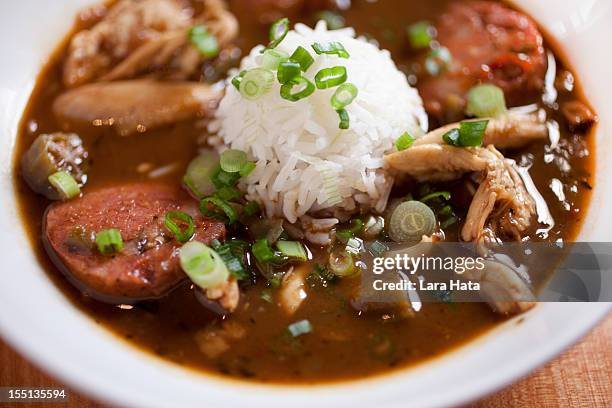

Back to Recipes
Gumbo Recipe

Ingredients
- 1 cup vegetable oil
- 1 cup all-purpose flour
- 1 large onion, chopped
- 1 large green bell pepper, chopped
- 2 celery stalks, chopped
- 3 cloves garlic, minced
- 1 pound andouille sausage, sliced
- 1 pound chicken breast, cubed
- 1 can diced tomatoes
- 1 can tomato sauce
- 1 quart chicken broth
- 1 pound shrimp, peeled and deveined
- 1 tablespoon Cajun seasoning
- 1 teaspoon dried thyme
- 1 teaspoon dried basil
- 1 teaspoon dried oregano
- 1 teaspoon cayenne pepper
- 1 teaspoon hot sauce
- 1 teaspoon Worcestershire sauce
- 1 bay leaf
- Salt and pepper to taste
- 4 cups cooked rice
Instructions
- Heat oil in a large pot over medium heat. Add flour and stir constantly until the mixture turns a caramel color.
- Add onion, bell pepper, celery, and garlic. Cook until vegetables are tender.
- Add sausage and chicken. Cook until chicken is no longer pink.
- Stir in tomatoes, tomato sauce, and chicken broth. Season with Cajun seasoning, thyme, basil, oregano, cayenne pepper, hot sauce, Worcestershire sauce, bay leaf, salt, and pepper.
- Bring to a boil, then reduce heat and simmer for 1 hour.
- Stir in shrimp and cook until pink.
- Remove bay leaf and serve gumbo over cooked rice.